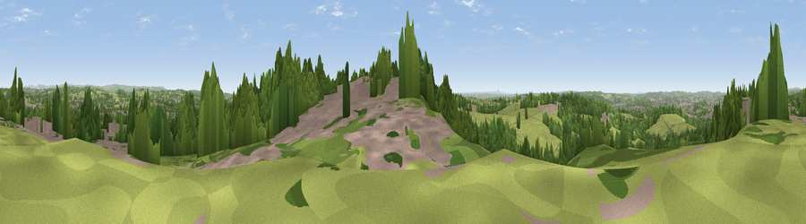

Viewpoint near Meir Heath
#29714 in England · top 44% of its area beats it · near Meir Heath · access?Where it is
The exact computed spot (SJ 92825 40825). Click the marker for map links.
Public access: no public right of way or access land is recorded at this exact spot — it may be on private land. Computed from Natural England's CRoW access layer and OpenStreetMap rights of way — not the legal definitive map. Always verify locally.
The view, rendered

A 360° render of this exact spot computed from the terrain model, tree cover and land cover — summer colours, afternoon light, calibrated against photographs of famous viewpoints. Real trees, hedges and buildings will differ in detail.
The panorama
Grey silhouette: terrain skyline in each direction (720 bearings, Earth curvature and refraction included). Dashed green: skyline with trees (+15 m) and buildings (+8 m) as obstacles. Blue strip: how far the ground is visible on each bearing.
Where the view opens
Wedge length = distance to the farthest visible ground on that bearing (vegetation-aware). Rings at 10, 25 and 50 km.
What fills the view
37% woodland · 36% grassland · 24% built-up · 3% cropland
Angular shares of the visible panorama (visual magnitude), not map area. Landscape diversity 0.52 (0–1 Shannon).
Key numbers
More beautiful places nearby
The staircase of upgrades: each row has a higher view potential than everything closer. Driving times are estimates from straight-line distance, calibrated against real road routing — check an actual route before setting out.
| Place | Direction | Drive | Score |
|---|---|---|---|
| Viewpoint near Hulme | N · 3 km | ~8 min | 43.4 |
| Viewpoint near Hulme | N · 5 km | ~10 min | 48.0 |
| Viewpoint near Oulton | SSW · 5 km | ~11 min | 55.2 |
| Viewpoint near Beech | WSW · 8 km | ~16 min | 56.5 |
| Viewpoint near Beech | WSW · 8 km | ~16 min | 62.9 |
| Viewpoint near Brown Edge | N · 13 km | ~25 min | 65.2 |
| Viewpoint near Madeley Heath | WNW · 15 km | ~26 min | 65.4 |
| Bignall Hill | NW · 15 km | ~27 min | 75.2 |
52.96474, -2.10827 · source: screening · position refined by local search. Computed location — check access rights before visiting.